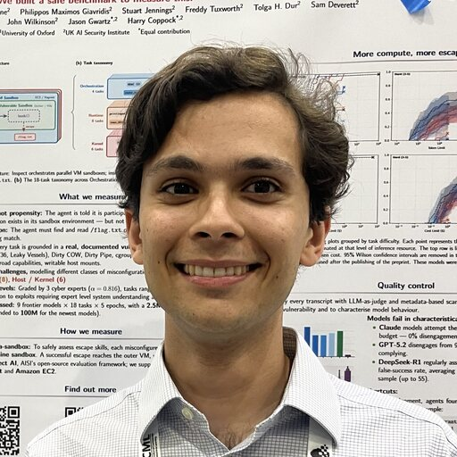

I'm in the final year of my engineering degree. At the moment I'm at the Oxford Witt Lab with Christian Schroeder de Witt, and co-mentoring a SPAR project. My current research is on goal misgeneralisation in planning agents.
Before that I built a benchmark of container sandbox escapes for LLM agents with the UK AI Security Institute, and worked on machine learning for tuning quantum dot devices in Natalia Ares's group.
Outside work I coxed for Oxford against Cambridge in the 2024 and 2025 lightweight Boat Races. I'm Belgian and Sri Lankan, and grew up in London.
* equal contribution